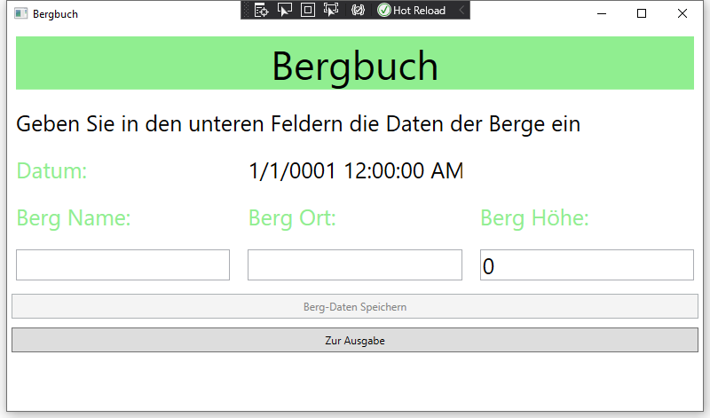
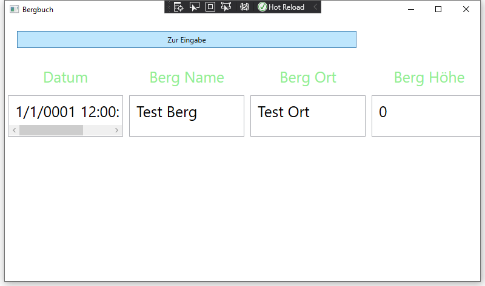

Nutzen
Diese Projekt ist kurz gesagt ein digitales Bergbuch. Wie der Name bereits sagt kann man hier die Daten eines Berges in einer csv Datei speichern. Mann kann sie aber auch (wenn gewünscht) wieder ausgeben. Die Daten können über eine WPF Benutzerfläche eingefügt werden.
Die WPF Benutzeroberfläche
Eingabe
Ausgabe:
Buttons
-
Button 1: Der Button "Berg-Daten speicher" speichert wie der Name schon sagt die zu vor eingegebenen Daten des Berges
-
Button 2: Der Button "zur Ausgabe" ermöglicht dem User des Programmes seine gespeicherten Daten zu sehen
-
Button 3: Der Button "zur Eingabe" ermöglicht dem User des Programmes zurück zur Eingabe zu gelangen